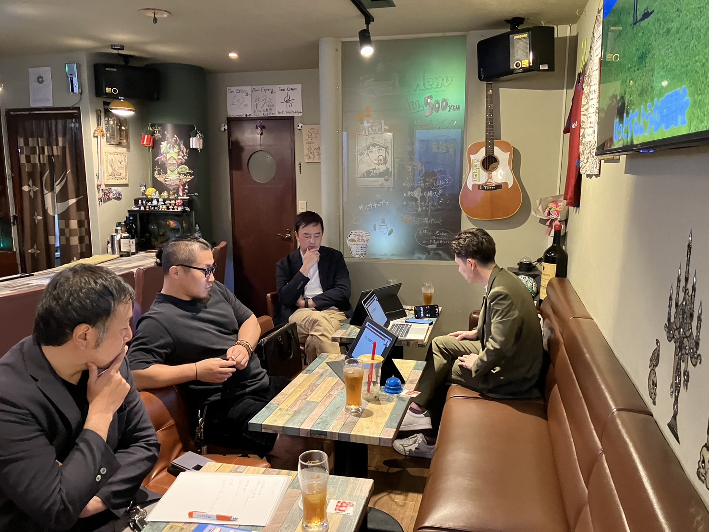
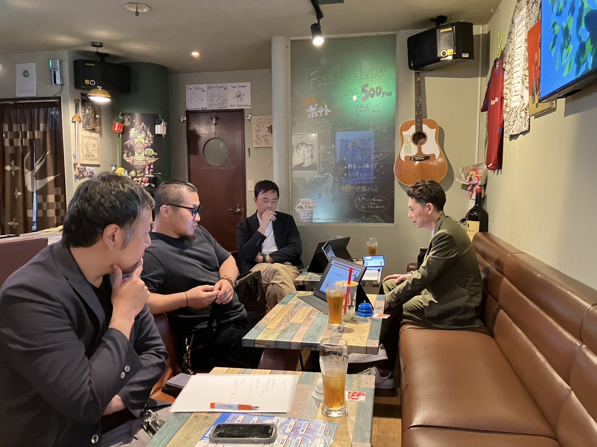
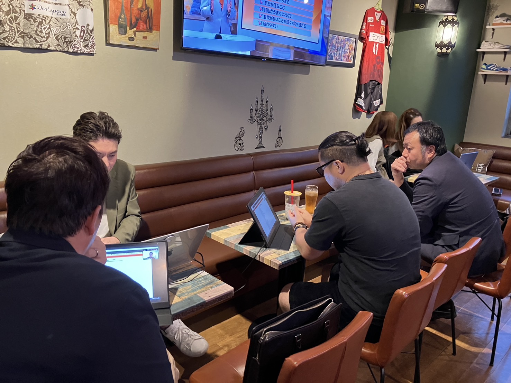
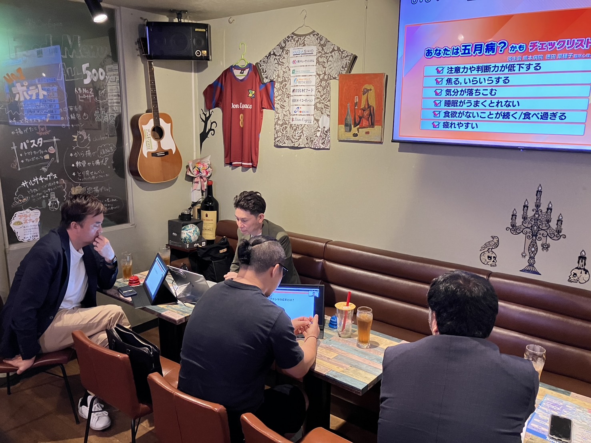

本番（5月16日）を5日後に控えた月曜の夜、第1講担当・福嶋講師による約40分の通しリハーサルを実施。前回（4/27）の議論で固まった構成を実演にかけ、「成果」の言い換え／本性→本能／時間配分の再修正という3点が本番までのアップデートとして確定した。No.01で残された「玄関」の議論は、本日の実演で具体的な落とし所が見えてきた。
本日の参加講師
光澤陽介（アドシン）／清田兼明（廣明）／清崎智大／田﨑新二（TAS ART）／穴井憲一郎（熊本）／福嶋智和（フクシマ建材）／國元裕介（アセット） — 計7名がZOOM参加。一部メンバーは熊本市内のカフェに集まり、対面とZOOMのハイブリッドで議論を進めた。
「良い結果」だと、結果と混同しやすい。
松尾会長が使う「広がり」のほうがしっくりくる 議論の中で複数から
当日の流れ
1. 福嶋講師、約40分の通し講話
本番想定の講話を、講師会メンバーの前で実演。スライド構造に沿って、骨格は次の通り。
- マネゼミの目的を「地域や職域での主体性を持って活動できるリーダーの育成／養成」と定義。リーダーを「成果を出し続ける存在」と位置づける。
- 講師自己紹介：福嶋智和（49歳）／フクシマ建材株式会社 代表取締役／創業1996年（30周年）／窓のリフォーム専門・業界でも珍しい高い直販比率／経営理念「窓を替えて、暮らしを変える」。
- 受講生への最初の問い：「なぜあなたはこのマネジメントリーダーゼミを受け始めたのですか？ — 1分、胸に手を当てて」。
- リーダー定義：他者を動機づける存在／目標に向かって共に進む存在 — リーダーは「他者との関わり」の中で成立する。
- 大切にする考え方①「自問自答」：自分で問いを立て、自分で答えを出すこと。他責・鵜呑みとの対比。
- 人間観：「見えている現実を通して、意図する本質を見る」。3つの問い — ①自分をどう見ているか／②他者とどう関わっているか／③どんな考え方・価値観で生きているか。
- 福嶋講師 自身のビフォーアフター：4期受講当時（2012年）の家族＋社員3名体制から、現在の社員8名＋パート2名体制へ。TAOK基本構えのスコア変化も自ら開示。
- 「夢をかなえるゾウ」ガネーシャの課題：その日頑張れた自分をホメる／誰か一人のいいところを見つけてホメる。
- 「こうあらねば」→「こうありたい」。価値観を「正解の押し付け」ではなく「ありたい姿」に転換する。
- 大切にする考え方②「成果の方程式」：成果＝考え方×熱意×能力。「成果＝ある目的を持って行動し、得られた良い結果」と定義（※ここで修正議論が入る）。
- 核心問い：「フクシマの成果とは？」 — 講師自身に問いを返す形で、受講生に成果を考えさせる。
福嶋講師 — 4期当時から現在へ
| 項目 | 4期受講当時（2012年） | 現在（2026年） |
|---|---|---|
| 体制 | 会長（父）／福嶋（代表）／社員 3名 | 会長（父・社外取締役）／福嶋（代表）／社員 8名／パート 2名 |
| TAOK基本構え（ア／イ／ウ／エ） | 7 / 14 / 14 / 6 | 17 / 18 / 5 / 3 |
講師自身がTAOK点数の 具体的な数字の変化 を開示することで、受講生に「14年でここまで動く」というリアリティを示す構成。抽象論を、自身の数値で接地させる導入が引き続き効いている。

2. リハーサル直後のフィードバック
講話直後から、各講師の意見が次々と出た。論点は大きく3つ — 表現の精度／構成の順序／受講生の伏線。
論点A：「成果」の定義は「広がり」へ
講話中の 「ある目的を持って行動し、得られた良い結果が成果」 という定義スライド、そして直後の 「フクシマの成果とは？」 という核心問いを呼び水に、議論が一気に深まった。「良い結果」が 結果 と混同しやすい、という指摘が複数から上がり、代替案として松尾会長が普段使う 「広がり」 という言葉に置き換える方向で合意。
「良い」は要らない。目的を持って臨んだ結果でいい。それが「広がり」につながる 議論の中での発言
論点B：「本性」→「本能」
ホモサピエンスの説明で 「本性」 と表現していた箇所は、文脈的に 「本能」 の方がしっくりくる、との指摘。これは即座に修正に合意。前回（4/27）の松尾会長による「ホモサピエンスは弱かったからこそ繋がれた」という整理を、本能の言葉で受ける流れになる。
論点C：「意思決定」はまだ出さない
第1講の段階で「意思決定」という言葉を使うのは先取りしすぎ。
ここではまだ出さない方がいい 議論の中での発言
第1講は「人間観」を起点とする回。意思決定は中盤以降の柱（第3講・第4講あたり）で扱う概念のため、第1講段階で先取りすると、受講生の頭の整理が散らかる、という構造的な指摘。
論点D：オリエンの「成長」と、本講の「成果」を接続する
前回オリエンテーションで触れた 「成長の方程式」 と、本講で使う 「成果の方程式」 が、ほぼ同じ式（考え方×熱意×能力）だが意味が違う、という混同を防ぐ必要がある。オリエンで「成長」と言っていた伏線を、本講の冒頭で短く拾っておくべき、というアドバイス。
論点E：TAOKを後半で再度やる伝え方
TAOKワークを後半でも再度やる予定を、事前に告知するか／しないかについて疑問が呈された（先に伝えると「正解探し」になる懸念）。引き続き要検討。
講師陣からの好評ポイント
「掘り下げていきましょう」という言葉が、寄り添う感じで刺さった 清田氏
全体として 「聞きやすく引き込まれる内容」 という評価が複数から上がった。前回（4/27）の議論を受けて磨かれた講話の完成度の高さが、本日のリハで確認できた格好。

3. プログラムの時間配分、再修正
通し実演を経て、前回（4/27）に組んだタイムテーブルにも追加修正が入った。
| 項目 | 修正前（4/27時点） | 修正後（本日確定） |
|---|---|---|
| 開講挨拶 | 20分 | 10分（半分に短縮） |
| ディベート | 20分 | 30分（フィードバック含めて10分追加） |
| 夢を導き出す30の質問 | 10分 | 20分（記入10分＋シェア10分） |
4. 第1講 本講のねらい（公式プログラムより）
- リーダーとは 「他者との関わりの中で成立する」 存在であることを理解する。
- 他者と関わる前に、まず自分を知ること（自知）の重要性を体感する。
- 「人生観」を 3つの自問自答 で掘り下げ、それが人間関係の土台であると腑に落とす。
- TAOK交流分析を通して、自分の人間関係の傾向を可視化する。
- 7ヶ月のマネゼミ全体の入口として、受講生同士の信頼の土台をつくる。
- ディベートは第1〜4講まで実施する方針（検討事項）。
5. 第1講 最終タイムテーブル（5月16日 本番版）
| 時刻 | 所要 | セクション | 内容 |
|---|---|---|---|
| 14:00 | 10分 | ① 開講挨拶 | OB会代表挨拶（吉田光臣会長）／講師挨拶（村田講師） |
| 14:10 | 30分 | ② 受講生自己紹介・参加目的 | 1人2分×12名（タイムキーパーは16期生から選出）／「なぜマネゼミに来たのか」を全員共有 |
| 14:40 | 40分 | ③ ワーク：TAOK交流分析 | TAOKチェックリスト記入 → 表に記入・解説（担当：福嶋）／各グループでシェア |
| 15:20 | 10分 | 休憩 | — |
| 15:30 | 60分 | ④ 講話「人間関係とは」（福嶋） | ①なぜここに来たのか／②リーダーとは他者を動機づける存在／③まず自分を観る（自知）／④人間観 — 3つの自問自答／⑤人間観が人間関係をつくる／⑥夢・ビジョンへの予告／⑦成果＝考え方×熱意×能力 |
| 16:30 | 20分 | ⑤ ワーク：夢を導き出す30の質問 | シート記入 10分 ／ 各グループでシェア 10分 |
| 16:50 | 10分 | 休憩 | — |
| 17:00 | 30分 | ⑥ ディベート | テーマ「◯◯◯◯」×2セッション |
| 17:30 | 40分 | ⑦ 感想発表・まとめ | 16期生感想発表 2分×12名（24分）／松尾講師による全体総括 10〜15分 |
| 18:10 | 30分 | ⑧ OBからのエール・事務連絡 | 次回（第2講 6/17）案内／課題図書『生き方』読了のお願い／懇親会（未定） |
| 19:00 | — | 終了 |
6. 運営側 準備物
- 講話レジュメ（受講生配布用・A4）
- TAOKチェックシート（40問・自己評価用）※受講生人数分
- TAOK基本的構えグラフ用紙 ※受講生人数分
- 夢を導き出す30の質問（第2講への宿題）
本日の主要決定
| 項目 | 確定内容 |
|---|---|
| 「成果」の定義 | 「良い結果」→「広がり」 に置き換え |
| ホモサピエンスの言葉遣い | 「本性」→「本能」 |
| マネゼミ目的の表記 | 「育成」「養成」混在 → 「養成」に統一 |
| 第1講での「意思決定」 | 使わない（先取り回避） |
| オリエン「成長」の接続 | 本講冒頭で短く拾う伏線を入れる |
| 開講挨拶 | 20分 → 10分 |
| ディベート | 20分 → 30分 |
| 事前課題「夢をかなえるゾウ」感想文 | 全員分受領済み、講義内で引用予定 |
福嶋講師、本番までの準備物（持参予定）
- レジュメ（最新版）
- TAOKチェックシート
- 基本的心構えの用紙
- 夢を導き出す30の質問
次の節目
第1講 本番
2026年5月16日（土） 14:00–19:00／会場：受講生が選定／担当：福嶋智和／課題図書（次回）：「生き方」（稲盛和夫）
第2講 打ち合わせ
2026年6月1日（月）／場所：キューケンシステム／担当：穴井・光澤／レジュメ作成：松尾孝氏
会場 — Don Espaco
当初予定はZOOM単独だったが、対面集合組とZOOM組のハイブリッドで実施。対面会場は 熊本市内のカフェバー「Don Espaco（ドン・エスパソ）」。手書きメニューが並ぶ黒板、壁にかけられたアコースティックギター、サッカーユニフォーム、年代物のボトル — 私服で集まれる空気感のなかで、本番5日前の細部詰めが行われた。


編集後記
本日のリハで印象的だったのは、「良い結果」という一語を「広がり」に置き換える という、たった一語の議論に時間を割いたこと。マネゼミ思想の中で「成果」は中心的なキーワードなだけに、ここを誤った定義のまま走らせると、第2講以降の積み上げが崩れる。一語の精度を本番5日前まで磨ききる姿勢に、この団体の思想的土台の手触りがある。
もう一つ、福嶋講師のスライドで光ったのは 「4期当時 7/14/14/6 → 現在 17/18/5/3」 という、自分自身のTAOKスコアの開示。受講生にとって「マネゼミで本当に人は変わるのか」という最大の疑問に、講師が自分の数字で答える構成は強い。前回（4/27）議論の「志の発表はしない」「事実報告型に変える」という合意が、ここで具体的な見せ方として結実している。
もう一つ、本日確認できたのは 「全体として聞きやすく引き込まれる」 という評価。前回（4/27）の議論を受けて、福嶋講師が再構成した講話は、講師陣を惹きつける完成度に達していた。No.01で残された「玄関」の作り方は、福嶋講師自身が冒頭に立つことで、すでに具体的な手応えに変わっている。
本番は5日後、5月16日（土）。16期受講生にとっての はじめての扉 を、本日整えた言葉で、福嶋講師が開ける。